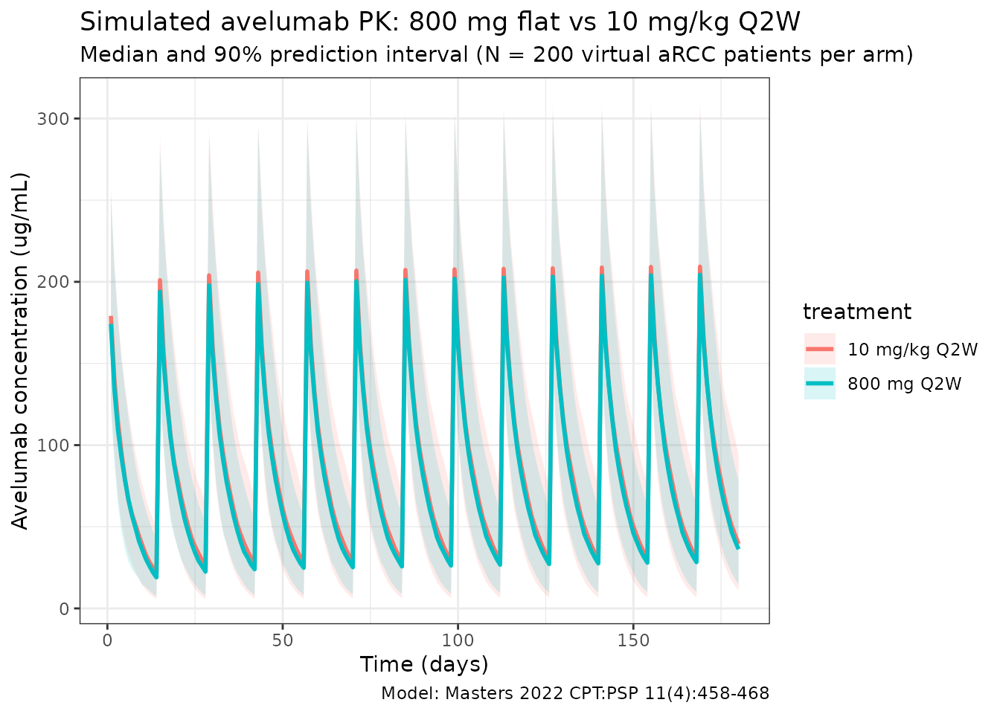
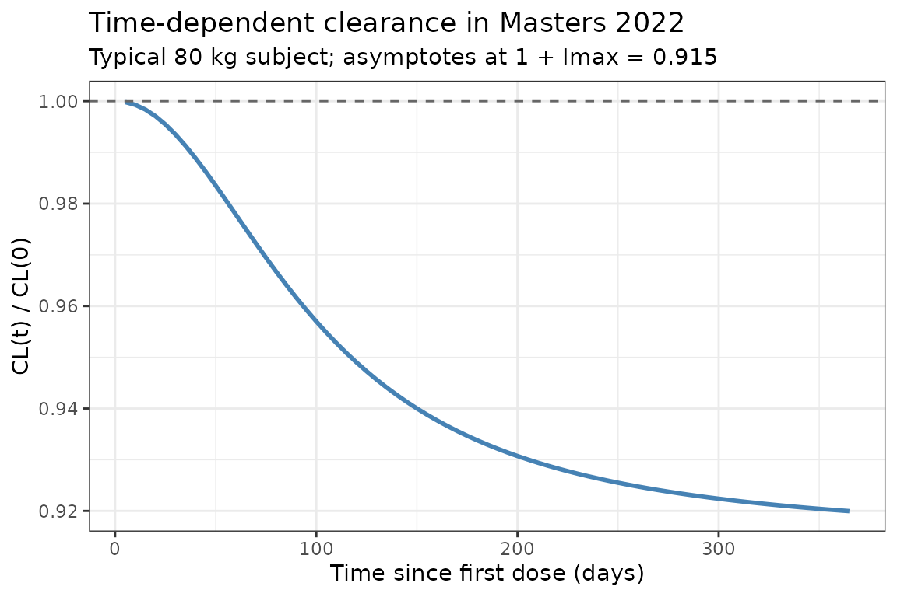

Masters_2022_avelumab
Source:vignettes/articles/Masters_2022_avelumab.Rmd
Masters_2022_avelumab.RmdModel and source
- Citation: Masters JC, Khandelwal A, di Pietro A, Dai H, Brar S. Model-informed drug development supporting the approval of the avelumab flat-dose regimen in patients with advanced renal cell carcinoma. CPT Pharmacometrics Syst Pharmacol. 2022;11(4):458-468. doi:[10.1002/psp4.12771](https://doi.org/10.1002/psp4.12771)
- Description: Two-compartment population PK model for avelumab (anti-PD-L1 IgG1) with time-dependent clearance in patients with advanced solid tumors.
- Modality: Therapeutic monoclonal antibody (IgG1), IV infusion.
Avelumab is a fully human anti-PD-L1 IgG1 monoclonal antibody. The Masters 2022 paper supported approval of the 800 mg Q2W flat-dose regimen by simulating exposure against the historic 10 mg/kg Q2W weight-based regimen using a population PK model inherited from Wilkins 2019 (Ref. 20 in the paper), re-estimated on a pooled dataset dominated by the JAVELIN Renal 100 / 101 advanced-renal-cell-carcinoma (aRCC) combination-arm population.
Structure: linear two-compartment IV model with time-dependent clearance via a Hill-type function of time since first dose:
with (a fractional decrease at ) and allometric weight scaling with reference weight 80 kg.
Population
The final-model population was a pooled dataset of 2,315 subjects across five studies (Masters 2022 Results, Population PK analysis):
- 488 aRCC patients from the JAVELIN Renal 100 (Phase Ib, avelumab + axitinib) and JAVELIN Renal 101 (Phase III, avelumab + axitinib combination arm) trials.
- 1,827 solid-tumor monotherapy patients carried over from the prior Wilkins 2019 dataset (metastatic Merkel cell carcinoma, advanced urothelial carcinoma, and other advanced solid tumors).
Demographics for the aRCC sub-population (Tables S2 / S3 of the supplementary material): weight range 44.2–143.0 kg, median 81.5 kg; for the prior monotherapy sub-population: weight range 30.4–204 kg, median 70.6 kg. Both regimens dosed avelumab 10 mg/kg IV every 2 weeks, with the 800 mg flat dose simulated as the alternative.
The same metadata is available programmatically via
readModelDb("Masters_2022_avelumab")$population.
Source trace
The per-parameter origin is recorded as an in-file comment next to
each ini() entry in
inst/modeldb/specificDrugs/Masters_2022_avelumab.R. The
table below collects them in one place for review.
| Parameter (model name) | Value | Source |
|---|---|---|
lcl (CL, L/day) |
log(0.0269 × 24) | Masters 2022 Table 1, θ_CL = 0.0269 L/h |
lvc (V1, L) |
log(3.196) | Masters 2022 Table 1, θ_V1 |
lvp (V2, L) |
log(0.7278) | Masters 2022 Table 1, θ_V2 |
lq (Q, L/day) |
log(0.03352 × 24) | Masters 2022 Table 1, θ_Q (see Assumptions) |
lImax (log|Imax|) |
log(0.08533) | Masters 2022 Table 1, θ_Imax = −0.08533 |
lt50 (T50, days) |
log(99.24) | Masters 2022 Table 1, θ_T50 |
lgamma (Hill shape) |
log(2.086) | Masters 2022 Table 1, θ_γ |
e_wt_cl (allometric on CL) |
0.4714 | Masters 2022 Table 1, θ_weight_on_CL |
e_wt_v1 (allometric on V1) |
0.4694 | Masters 2022 Table 1, θ_weight_on_V1 |
e_wt_v2 (allometric on V2) |
0.5826 | Masters 2022 Table 1, θ_weight_on_V2 |
e_wt_q (allometric on Q) |
1 (fixed) | Masters 2022 Methods, Study overview |
IIV block etalcl + etalvc + etalvp
|
lower-tri c(0.09339, 0.03048, 0.03776, 0.08418, 0.01799, 1.204) | Masters 2022 Table 1, ω² and covariance rows |
etalImax |
0.1052 | Masters 2022 Table 1, ω²_Imax |
propSd |
0.1742 | Masters 2022 Table 1, σ_proportional |
addSd (µg/mL) |
2.168 | Masters 2022 Table 1, σ_additive |
Equations:
-
d/dt(central)andd/dt(peripheral1): standard two-compartment IV micro-constant form (kel = cl/v1, k12 = q/v1, k21 = q/v2). - Hill-type time-dependent CL: Masters 2022 Methods / Results and the Wilkins 2019 precedent.
Virtual cohort
Original observed data are not publicly available. The simulations below use a virtual cohort whose weight distribution approximates the aRCC sub-population reported in Masters 2022 (range 44.2–143.0 kg, median 81.5 kg).
set.seed(2022)
n_subj <- 200
cohort <- tibble(
ID = seq_len(n_subj),
WT = pmin(pmax(rlnorm(n_subj, log(81.5), 0.22), 44.2), 143.0)
)Two dosing regimens are compared: the weight-based 10 mg/kg Q2W and the approved flat 800 mg Q2W, each given for 13 cycles over 180 days.
dose_interval_d <- 14
n_doses <- 13
dose_times_d <- seq(0, by = dose_interval_d, length.out = n_doses)
obs_times_d <- sort(unique(c(dose_times_d, seq(0, 180, by = 1))))
build_events <- function(pop, regimen) {
amt_per_subject <- if (regimen == "10 mg/kg Q2W") pop$WT * 10 else rep(800, nrow(pop))
d_dose <- pop |>
mutate(AMT = amt_per_subject) |>
tidyr::crossing(TIME = dose_times_d) |>
mutate(EVID = 1, CMT = "central", DUR = 1 / 24, DV = NA_real_,
treatment = regimen)
d_obs <- pop |>
tidyr::crossing(TIME = obs_times_d) |>
mutate(AMT = NA_real_, EVID = 0, CMT = "central", DUR = NA_real_,
DV = NA_real_, treatment = regimen)
dplyr::bind_rows(d_dose, d_obs) |>
dplyr::arrange(ID, TIME, dplyr::desc(EVID)) |>
as.data.frame()
}
events_flat <- build_events(cohort, "800 mg Q2W")
events_wtbased <- build_events(cohort, "10 mg/kg Q2W")Simulation
mod <- readModelDb("Masters_2022_avelumab")
sim_flat <- rxSolve(mod, events = events_flat, returnType = "data.frame")
#> ℹ parameter labels from comments will be replaced by 'label()'
sim_wtbased <- rxSolve(mod, events = events_wtbased, returnType = "data.frame")
#> ℹ parameter labels from comments will be replaced by 'label()'
sim <- dplyr::bind_rows(
dplyr::mutate(sim_flat, treatment = "800 mg Q2W"),
dplyr::mutate(sim_wtbased, treatment = "10 mg/kg Q2W")
)Concentration-time profiles
Masters 2022 Figure 2 and Figure S1 compare predicted exposure between the flat-dose and weight-based regimens. The figure below reproduces that comparison (median with 5–95% prediction interval per regimen):
sim_summary <- sim |>
dplyr::filter(time > 0) |>
dplyr::group_by(time, treatment) |>
dplyr::summarise(
median = stats::median(Cc, na.rm = TRUE),
lo = stats::quantile(Cc, 0.05, na.rm = TRUE),
hi = stats::quantile(Cc, 0.95, na.rm = TRUE),
.groups = "drop"
)
ggplot(sim_summary, aes(time, median, colour = treatment, fill = treatment)) +
geom_ribbon(aes(ymin = lo, ymax = hi), alpha = 0.15, colour = NA) +
geom_line(linewidth = 1) +
labs(
x = "Time (days)",
y = "Avelumab concentration (ug/mL)",
title = "Simulated avelumab PK: 800 mg flat vs 10 mg/kg Q2W",
subtitle = paste0("Median and 90% prediction interval (N = ",
n_subj, " virtual aRCC patients per arm)"),
caption = "Model: Masters 2022 CPT:PSP 11(4):458-468"
) +
theme_bw()
Time-dependent clearance
Masters 2022 reports a fractional decrease in CL with time (, days, ). The typical-value CL profile below reproduces the Hill-type time course at a reference 80 kg subject (deterministic, etas = 0):
t_grid <- seq(0, 365, by = 5)
events_cl <- data.frame(
ID = 1, WT = 80,
TIME = c(0, t_grid),
AMT = c(800, rep(NA_real_, length(t_grid))),
EVID = c(1, rep(0, length(t_grid))),
CMT = "central",
DUR = c(1 / 24, rep(NA_real_, length(t_grid))),
DV = NA_real_
)
sim_cl <- rxSolve(
mod, events = events_cl,
params = c(WT = 80, etalcl = 0, etalvc = 0, etalvp = 0, etalImax = 0),
omega = NA,
returnType = "data.frame"
)
#> ℹ parameter labels from comments will be replaced by 'label()'
sim_cl <- sim_cl[sim_cl$time > 0, ]
ggplot(sim_cl, aes(time, cl / cl_base)) +
geom_line(linewidth = 1, colour = "steelblue") +
geom_hline(yintercept = 1, linetype = "dashed", colour = "grey40") +
labs(
x = "Time since first dose (days)",
y = "CL(t) / CL(0)",
title = "Time-dependent clearance in Masters 2022",
subtitle = "Typical 80 kg subject; asymptotes at 1 + Imax = 0.915"
) +
theme_bw()
PKNCA validation
Compute NCA parameters over the third dosing interval (steady-state approximation for a mAb with a ~7 day half-life):
interval_start <- dose_times_d[3]
interval_end <- dose_times_d[4]
sim_nca <- sim |>
dplyr::filter(!is.na(Cc),
time >= interval_start,
time <= interval_end) |>
dplyr::mutate(time_rel = time - interval_start) |>
dplyr::select(id, treatment, time_rel, Cc)
conc_obj <- PKNCA::PKNCAconc(sim_nca, Cc ~ time_rel | treatment + id)
dose_df <- data.frame(
id = rep(cohort$ID, 2),
treatment = rep(c("800 mg Q2W", "10 mg/kg Q2W"), each = n_subj),
time_rel = 0,
amt = c(rep(800, n_subj), cohort$WT * 10)
)
dose_obj <- PKNCA::PKNCAdose(dose_df, amt ~ time_rel | treatment + id)
intervals <- data.frame(
start = 0,
end = dose_interval_d,
cmax = TRUE,
tmax = TRUE,
auclast = TRUE,
half.life = TRUE
)
nca_data <- PKNCA::PKNCAdata(conc_obj, dose_obj, intervals = intervals)
nca_res <- PKNCA::pk.nca(nca_data)
#> ■■■■■■■■■■■■■■■■ 50% | ETA: 4s
#> ■■■■■■■■■■■■■■■■■■■■■■■■■■■■ 91% | ETA: 1s
knitr::kable(summary(nca_res),
caption = "Simulated NCA parameters (3rd dosing interval, days 28-42)")| start | end | treatment | N | auclast | cmax | tmax | half.life |
|---|---|---|---|---|---|---|---|
| 0 | 14 | 10 mg/kg Q2W | 200 | 1120 [37.1] | 202 [24.1] | 1.00 [1.00, 1.00] | 5.47 [2.57] |
| 0 | 14 | 800 mg Q2W | 200 | 1150 [34.7] | 201 [23.9] | 1.00 [1.00, 1.00] | 5.24 [1.96] |
Assumptions and deviations
-
Table 1 θ_Q typo (0.3352 → 0.03352 L/h): The
paper’s Table 1 prints the point estimate for
as 0.3352 L/h, but its listed RSE (12.24%) and 95% CI (0.02548–0.04157
L/h) are only internally consistent with θ_Q = 0.03352
L/h (a missing leading zero in the printed point estimate).
0.03352 L/h is also the value inherited from the Wilkins 2019 base
structural model and is in the expected range for mAb
inter-compartmental clearance. The corrected value is used here and
annotated in the source-trace comment of
Masters_2022_avelumab.R. No erratum is posted on the publisher site as of 2026-04-20. - Reference weight: Masters 2022 does not explicitly state the reference weight used in the allometric scaling, but the 800 mg flat-dose rationale is built around an approximate 80 kg median body weight, so 80 kg is used here as the allometric reference for CL, V1, V2, and Q.
-
Imax parameterization:
is always negative in the source
().
To keep every individual
strictly negative under log-normal IIV, the model stores
and applies the negative sign in the
model()block:Imax_i <- -exp(lImax + etalImax). This is equivalent to a log-normal distribution on the magnitude of the decrease. - ω²(V2) = 1.204 (RSE 109.7%): This is a very large log-normal variance (IIV on V2 ≈ 135% CV) with poor identifiability, but it is internally consistent with its reported 95% CI (0.9567–1.451) and is used as reported. Downstream NCA estimates driven by V2 (e.g., terminal-phase volumes) will therefore show wide between-subject spread.
-
Residual error convention: The
sigmacolumn in Table 1 is the standard deviation (not variance) of the proportional (0.1742) and additive (2.168 µg/mL) residual components, matching NONMEM’s default reporting. Used directly aspropSdandaddSd. - Virtual cohort: Demographics were simulated as a log-normal weight distribution anchored to the aRCC-subpopulation median (81.5 kg) and truncated to the reported range (44.2–143.0 kg). The paper does not tabulate other baseline covariates for the final model because only body weight enters the final structural model.
- Time units: The source reports CL and Q in L/h and T50 in days. The packaged model keeps time in days for consistency with T50; CL and Q are converted via ×24.